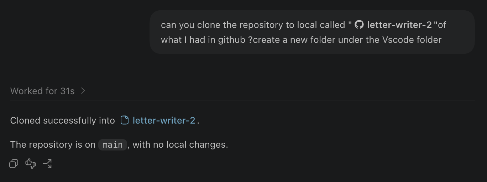
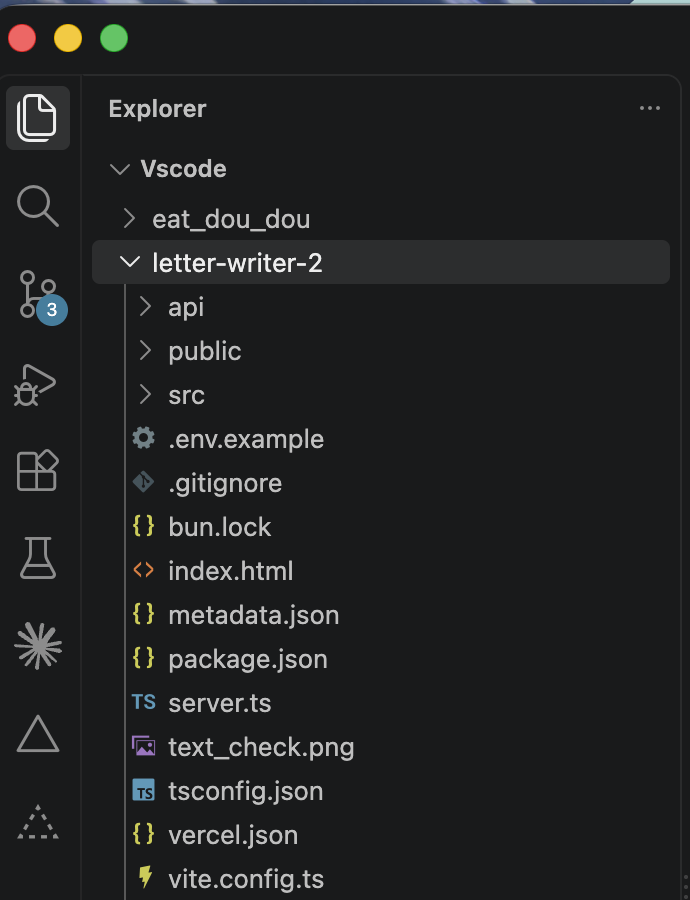

Week 4
✦ In class practice


I had already installed and configured agents in VS Code and connected the project to GitHub. During the in-class practice, I assisted my groupmates in completing these steps, and I cloned my letter-writing GitHub repository into VS Code (Fig. 1 and Fig. 2).
← Back to journal